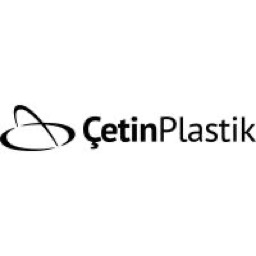
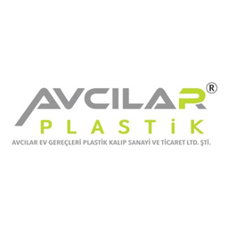
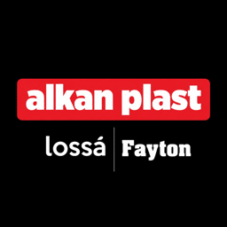
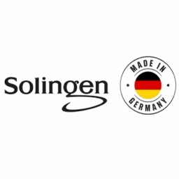

- En az sipariş adedi
- 12 adet
- Hazırlık süresi
- 1 iş günü
Global B2B toptan pazaryeri
Çarşıya gitmeden toptan alın.
İstanbul'a, Ankara'ya, Antep'e gitmeniz gerekmez. Fiyatı, en az sipariş adedini ve hazırlık süresini ekranınızda görürsünüz. Siparişiniz teslimata kadar kayıt altında kalır.
Hesabınız yok mu?Ücretsiz kaydolun
- toptan ürün
- 2.412
- kategori
- 52
- doğrulanmış mağaza
- 18
- para birimi
- 4
Sayılar 10 Kasım 2026 günü istoc.com verisinden alındı.
Teklif isteği
Bir istek, birden fazla teklif
Aradığınız ürünü yazın. Üreticiler size teklif göndersin.
- Ürünü ve adedi yazarsınız.
- Üreticiler isteğinizi görür ve teklif verir.
- Teklifleri karşılaştırır ve uygun olanı seçersiniz.
Alıcılar için
Neden iStoc'tan alırsınız?
İşletmenizin toptan alımını yerinizden yaparsınız. Dört nedeni var.
Çünkü
Yola çıkmanız gerekmez
Üreticiye mesaj yazar, teklif ister ve siparişi ekrandan verirsiniz.
Çünkü
Üreticiyi tanırsınız
Üretici kartında işletme doğrulaması, şehir ve ürün sayısı yazar.
Çünkü
Koşulu önceden görürsünüz
Ürün kartında birim fiyat, KDV hariç fiyat, en az sipariş adedi ve hazırlık süresi yazar.
Çünkü
Siparişiniz kayıt altındadır
iStoc kabul ettiğiniz koşulları saklar. Koşullar karşılanmazsa talep açarsınız.
Satıcılar için
Neden iStoc'ta satarsınız?
- Şu an satış komisyonu yokÜcretler Satıcı Hizmet Sözleşmesi'ndeki ücret tablosuna göredir.
- Alıcıya aracısız ulaşırsınıziStoc sizi toptan alıcıyla doğrudan buluşturur.
- Başvuru 4 dakika sürerOnay ortalama 2 iş günü sürer. Başvuru ücretsizdir.
- Doğrulanan mağaza rozet taşırİşletme doğrulaması rozeti bütün paketlerde vardır.
Kategoriler
Sektörünüze göre tedarik edin.
52 üst kategori ve 751 alt kategori var. Ürünü en çok olan kategoriler önde durur.
52 kategorinin tümüEv ve Mutfak Gereçleri
478 ürünTemizlik ve Hijyen Ürünleri
65 ürünMobilya
44 ürünElektrik Malzemeleri
31 ürünTarım ve Hayvancılık
17 ürünOtomotiv
8 ürünİnşaat ve Yapı Malzemeleri
1 ürünKırtasiye ve Ofis Sarf Malzemeleri
1 ürünHırdavat
1 ürünKozmetik, Makyaj ve Kişisel Bakım
1 ürünPromosyon Ürünler
43 alt kategoriKimyasal Maddeler
29 alt kategori
Ürünler
Fiyatı ve koşulu açık ürünler.
Fiyatlar ABD doları cinsindendir. Büyük yazan fiyata KDV dahildir.
2.412 ürünün tümü-
Doğrulanmış üretici -
Doğrulanmış üretici - En az sipariş adedi
- 24 adet
- Hazırlık süresi
- 1 iş günü
-
Doğrulanmış üretici - En az sipariş adedi
- 36 adet
- Hazırlık süresi
- 1 iş günü
-
Doğrulanmış üretici - En az sipariş adedi
- 48 adet
- Hazırlık süresi
- 1 iş günü
-
Doğrulanmış üretici - En az sipariş adedi
- 250 adet
- Hazırlık süresi
- 1 iş günü
-
Doğrulanmış üretici - En az sipariş adedi
- 12 adet
- Hazırlık süresi
- 1 iş günü
-
Doğrulanmış üretici - En az sipariş adedi
- 110 adet
- Hazırlık süresi
- 1 iş günü
-
Doğrulanmış üretici - En az sipariş adedi
- 12 adet
- Hazırlık süresi
- 1 iş günü
Üreticiler
İşletmesi doğrulanmış üreticiler.
iStoc'ta 19 mağaza var. 18 mağazanın işletme doğrulaması tamamlandı.
Tüm üreticiler-
İşletmesi doğrulandı

Çetin Plastik
Üretici, İstanbul
- Kuruluş
- 1988
- Ürün
- 230
- Fabrika
- 15.000 m²
-
İşletmesi doğrulandı

Avcılar Plastik
Üretici, İstanbul
- Kuruluş
- 1989
- Ürün
- 91
-
İşletmesi doğrulandı

Alkan Plastik
Üretici, İstanbul
- Kuruluş
- 2009
- Ürün
- 52
-
İşletmesi doğrulandı

Solingen Bıçak
Üretici, İstanbul
- Faaliyet
- 1992'den beri
- Ürün
- 15
Sipariş süreci
Her sipariş kayıt altında.
Ödemeyi iStoc tutmaz ve ödemeye aracılık etmez. Sipariş koşullarınızı iStoc saklar ve siparişinizi teslimata kadar izler.
01Sipariş koşullarında anlaşırsınız
Satıcıyla sipariş koşullarında anlaşırsınız. Sonra siparişi başlatırsınız.
02Ödemeyi yaparsınız
Ödemeyi satıcının sunduğu yöntemle doğrudan satıcıya yaparsınız. Tek ödeme seçeneği sunulursa bütün sepeti Thoptan.com'a ödersiniz. Ödemeyi iStoc tutmaz ve ödemeye aracılık etmez.
03Sipariş koşullarınız kaydedilir
Kabul ettiğiniz sipariş koşullarının bir kopyasını iStoc saklar. Sipariş durumunu teslimata kadar iStoc izler.
04Sorun çıkarsa destek alırsınız
Sipariş koşulları karşılanmazsa talep açarsınız. Sorunu, kabul ettiğiniz koşullara göre çözmenize iStoc yardım eder.
- Ödeme yöntemleri
- Visa, Mastercard, AMEX, PayPal, EFT. Geçerli yöntemi satıcı belirler.
- Para birimleri
- GBP, USD, EUR, TRY
Sık sorulanlar
Sipariş vermeden önce sorulanlar.
Ödemeyi satıcının sunduğu yöntemle doğrudan satıcıya yaparsınız. Tek ödeme seçeneği sunulursa bütün sepeti Thoptan.com'a ödersiniz. Ödemeyi iStoc tutmaz ve ödemeye aracılık etmez.
Geçerli yöntemi satıcı belirler. Satıcı kredi kartı, banka kartı ya da EFT kabul edebilir. Satıcı başka yöntemler de sunabilir.
En az sipariş adedi ürün kartında yazar. Sepette bu adedin altında kalırsanız iStoc sizi uyarır.
Rozet, mağazanın işletme doğrulamasının tamamlandığını gösterir. Rozet üretici kartında ve ürün kartında durur.
Sipariş gönderilmezse ya da kaybolursa iade talebi oluşturursunuz. Ürün kusurlu, yanlış ya da hasarlı gelirse de iade talebi oluşturursunuz. İadeyi, ödeme yaptığınız taraf yapar. İade, kabul ettiğiniz koşullara göre yapılır.
Teslimat süresini ve gönderim şeklini satıcı siparişte belirtir. Ürün gönderilince takip numarası sipariş ayrıntılarınıza eklenir. Kargo firmasının adı da eklenir.
Toptan alıma bugün başlayın.
Hesap açmak ücretsizdir. Ürünleri arar, üreticilere yazar ve teklif istersiniz.